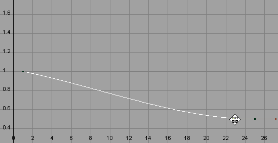
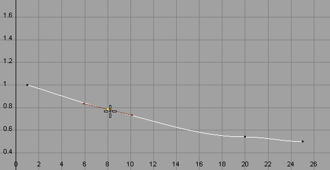
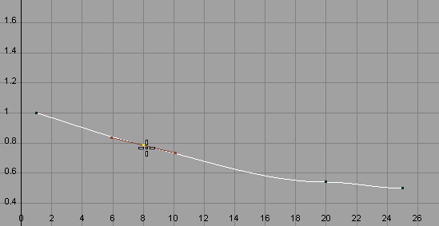
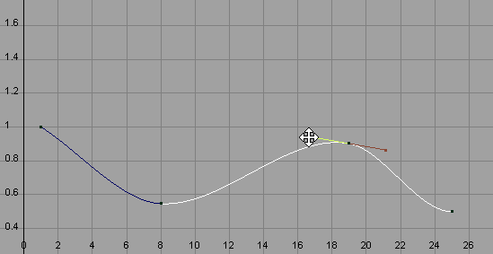
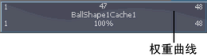

可以融合几何缓存片段，以在对象的重叠缓存片段之间创建平滑、无缝的过渡。
几何缓存片段将自动融合。默认情况下，启用的几何缓存片段的所有重叠区域会使用其缓存片段的当前权重设置自动融合在一起。请参见输入权重。
缓存权重在重叠缓存片段之间进行归一化。因此，如果两个重叠缓存片段具有相同的权重值（即 1.0 和 1.0，0.5 和 0.5 等等），则它们将在播放时对其缓存融合区域中的变形起同等作用。
可以调整缓存片段融合的平滑度，方法是调整其权重设置，或操纵其权重曲线。例如，如果您有两个重叠缓存片段，一个从帧 1-25，另一个从帧 20-45，两个片段均将其输入权重设定为 0.5 (50%)，则这两个缓存片段将在播放时对其对象在帧 20-25 的变形起到同等作用。
顺序缓存片段不进行融合。当您的几何缓存片段之间存在间隙时，将使用对象的原始（源）变形的实时播放（而非插值缓存数据）填充这些间隙。
也可以为几何缓存片段创建权重曲线。通过这些权重曲线可以调整几何缓存片段的变形从其融合区域缓入和缓出的方式。
创建并调整几何缓存片段权重曲线
- 在“Trax 编辑器”(Trax Editor)中，选择要创建并调整其权重曲线的几何缓存片段。
- 在缓存片段上单击鼠标右键，然后从显示的上下文相关菜单中选择“创建权重曲线”(Create Weight Curve)。
系统将为选定的缓存片段创建权重曲线。
- 执行下列操作之一：
- 在 Trax 工具栏中，单击“图形权重曲线”(Graph Weight Curves)按钮 (
 )。
)。
- 在选定的缓存片段上单击鼠标右键，然后从显示的上下文相关菜单中选择“对权重制图”(Graph Weight)。
“曲线图编辑器”(Graph Editor)将打开，选定的缓存片段权重曲线将在其图形视图中处于框显状态。
- 在 Trax 工具栏中，单击“图形权重曲线”(Graph Weight Curves)按钮 (
- 通过执行以下操作，调整缓存片段权重曲线的形状：
- 移动权重曲线的关键帧或关键帧切线。
从 Maya 工具箱中选择“移动工具”(Move Tool)，然后使用鼠标中键拖动关键帧或关键帧切线控制柄，可更改权重曲线的形状。
- （可选）将新关键帧添加到权重曲线。
从“曲线图编辑器”(Graph Editor)的工具栏中选择“插入关键帧工具”(Insert Keys Tool) (
 )，然后使用鼠标中键单击权重曲线，可将其他关键帧添加到权重曲线。

)，然后使用鼠标中键单击权重曲线，可将其他关键帧添加到权重曲线。
然后可以使用这些新关键帧及其切线控制柄，来进一步操纵权重曲线的形状。
修改后的权重曲线现在显示在轨迹视图区域中的选定缓存片段上。
提示：在“属性编辑器”(Attribute Editor)中，也可以为几何缓存的 节点上的“输入权重”(Input Weight)属性设置关键帧，以便为对象创建几何缓存权重曲线。